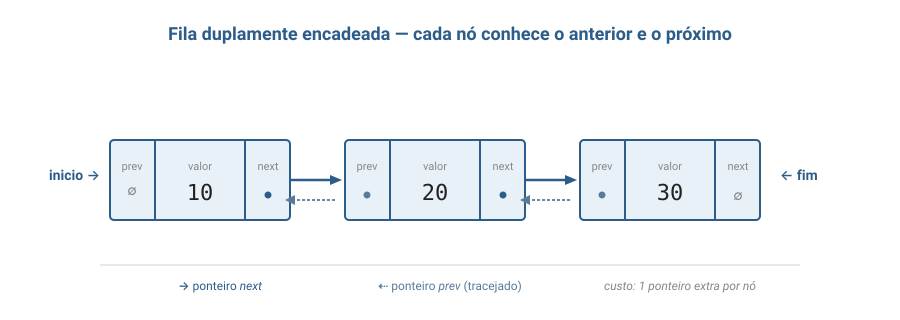
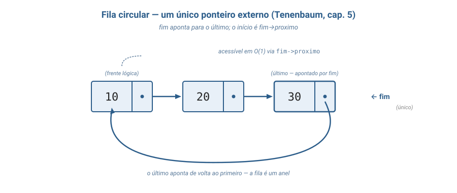

Algoritmos e Estruturas de dados
Unirios
Aula 03
Fila
FIFO · primeira implementação concreta em C
Aula de implementação — código, header e main executável.
Bloco 1
Conceito — aprofundamento progressivo
Da intuição inicial à definição formal, uma camada por vez.
- Intuição inicial
- Definição informal
- Propriedades e comportamento
- Definição formal e notação
- Análise de complexidade
- Conexões e variantes
Camada 1
A intuição inicial
Imagine uma fila do banco. Quem chega entra atrás de todo mundo; quem é atendido sai pela frente.
Ninguém fura, ninguém é atendido fora de ordem.
A regra inviolável: quem chegou primeiro, sai primeiro.
A estrutura computacional Fila existe para modelar exatamente esse comportamento.
Camada 2
Definição informal — vocabulário básico
Uma Fila é uma estrutura linear com restrição de acesso:
- insere-se sempre no fim (rear);
- remove-se sempre na frente (front).
Essa política recebe o nome FIFO (First-In, First-Out) — o primeiro elemento que entrou é o primeiro a sair.
Tenenbaum, cap. 4 — Filas e listas; Cormen et al., cap. 10.1.
As operações disponíveis
enfileirar(enqueue) — coloca no fim.desenfileirar(dequeue) — remove e devolve da frente.frente— apenas lê a frente, sem remover.vazia— informa se há elementos.
A Fila não te deixa olhar o terceiro elemento, nem remover o último, nem inserir no meio.
A restrição é a feature — é o que torna a Fila simples, previsível e rápida.

Turma, segundo Tenenbaum, para que enfileirar e
desenfileirar sejam ambos rápidos numa lista
encadeada, mantemos dois ponteiros externos: inicio
apontando para a frente, fim apontando para o
último. Sem o fim, cada inserção teria que
percorrer a lista inteira.
Tenenbaum, cap. 4 — Filas e listas
Camada 3 — ponte com a Aula 02
O nó da Fila é o nó da lista simples
A representação interna desta aula é construída sobre o nó apresentado em "O nó — unidade de construção" na Aula 02.
-
Mesmo nó: campo
valor(carga útil) + campoproximo(ligação). -
O que muda não é o nó — é a
política de acesso (FIFO)
e o estado externo (
inicio+fim).
Camada 3
Os dois ponteiros que tornam tudo eficiente
-
inicio(front) — primeiro elemento; de onde os itens serão removidos. -
fim(rear) — último elemento; onde novos itens serão inseridos.
Cormen et al. (cap. 10.2) propõem como exercício clássico: mostrar que essa representação garanteenqueueedequeueem O(1).
Inserção — enfileirar
- Aloca novo nó com o valor; ponteiro
proximo = NULL. -
Se a fila estava vazia →
iniciopassa a apontar para o novo nó. -
Senão →
fim->proximoaponta para o novo nó. - Em ambos os casos:
fimé atualizado para o novo nó.
Sempre O(1) — nenhum percurso da lista é necessário.
Remoção — desenfileirar
- Lê o valor do nó apontado por
inicio. - Atualiza
iniciopara o próximo nó. - Libera o nó antigo com
free.
Cuidado fundamental (Tenenbaum, cap. 4): se ao avançar oinicioele se tornarNULL, ofimtambém precisa ser explicitamente redefinido comoNULL.
Esquecer disso deixa fim apontando para memória já
liberada — dangling pointer, bug obscuro garantido.
Invariantes — propriedades que sempre valem
-
Fila vazia:
inicio == NULLefim == NULLao mesmo tempo. -
Único elemento:
inicioefimapontam para o mesmo nó. -
Mais de um: ambos não-NULL,
fim->proximo == NULL, e seguindoiniciochega-se afim.
Cada operação tem de terminar deixando esses invariantes válidos.
Camada 4
TAD Fila — assinaturas
criar() -> Fila
enfileirar(Fila, Inteiro) -> Fila
desenfileirar(Fila) -> Fila [erro se vazia]
frente(Fila) -> Inteiro [erro se vazia]
vazia(Fila) -> BooleanoUm TAD define a estrutura pelo seu contrato observável, sem comprometer-se com a representação interna.
Axiomas — coração do FIFO
- A1. vazia(criar()) = verdadeiro
- A2. vazia(enfileirar(F, x)) = falso
- A3. frente(enfileirar(criar(), x)) = x
-
A4. frente(enfileirar(F, x)) = frente(F)
quando F não-vazia → a frente continua sendo quem entrou antes -
A6. desenfileirar(enfileirar(F, x)) = enfileirar(desenfileirar(F), x)
quando F não-vazia → FIFO formalizado
A representação interna como tupla
Para a versão simplesmente encadeada com dois ponteiros:
F = (N, valor, proximo, inicio, fim)
- N — conjunto dos nós da fila.
- valor: N → V — associa cada nó a um inteiro.
- proximo: N → N ∪ {NULL} — campo de endereço.
- inicio ∈ N ∪ {NULL} — ponteiro externo para a frente.
- fim ∈ N ∪ {NULL} — ponteiro externo para o último.
Invariante: vazia ⇔ inicio = NULL ∧ fim = NULL.
Camada 5
Análise — comparando representações
| Operação | Lista simples ( inicio+fim) |
Lista dupla | Lista circular (só fim) |
Vetor não-circ. | Vetor circ. |
|---|---|---|---|---|---|
| enfileirar | O(1) | O(1) | O(1) | O(1)* | O(1) |
| desenfileirar | O(1) | O(1) | O(1) | O(n) | O(1) |
| frente | O(1) | O(1) | O(1) | O(1) | O(1) |
| vazia | O(1) | O(1) | O(1) | O(1) | O(1) |
| Capacidade | dinâmica | dinâmica | dinâmica | fixa | fixa |
* amortizado, com realloc automático.
As três encadeadas têm o mesmo perfil;
a escolha entre elas se dá em outros eixos.
Encadeada × vetor — vantagens e custos
Vantagens da encadeada
- Cresce/diminui sob demanda.
- Sem overflow individual — múltiplas filas dividem o pool de memória livre.
- Sem deslocamento de elementos.
Custos
- Overhead de ponteiro por nó (8 B em 64 bits).
- Cada nó: 1 chamada a
malloc/free. - Tempo do sistema acumula em filas com milhões de operações.
Camada 6
As três implementações desta aula
-
Lista simplesmente encadeada
com
inicioefim— versão canônica, mínima. -
Lista duplamente encadeada
— cada nó com
anterioreproximo; base natural para Deque futuro. -
Lista circular com
um único ponteiro externo
(
fim) — otimização proposta por Tenenbaum, cap. 5.
As três expõem as mesmas assinaturas de função —
a main() não muda.
Outras variantes (não implementadas aqui)
- Vetor circular — capacidade fixa; útil em sistemas embarcados.
- Deque (double-ended queue) — generaliza Fila e Pilha; apoia-se em lista dupla.
- Fila de prioridade — relaxa o FIFO; saída segue uma chave. Implementação canônica: heap binário.
Onde Fila reaparece
- Aula 04 (Pilha) — mesma representação interna, comportamento oposto (LIFO).
- BFS em grafos — busca em largura exige Fila por construção.
- Escalonadores FCFS em SOs.
- Filas de mensagens distribuídas (RabbitMQ, AWS SQS, Kafka).
Bloco 2
Visualização gráfica
Ciclo completo na versão canônica + diagramas das variantes.
Passo 1 — fila_criar()

Passo 2 — enfileirar(10)

Passo 3 — enfileirar(20)

Passo 4 — enfileirar(30)

Passo 5 — frente() retorna 10

Passo 6 — desenfileirar() remove 10

Passo 7 — desenfileirar() remove 20

Ao desenfileirar o último, fim também precisa ir para NULL.
Variante — lista duplamente encadeada

Cada nó passa a ter dois ponteiros — base natural para Deque.
Variante — lista circular com um ponteiro

proximo">
Apenas fim como ponteiro externo;
a frente é alcançada em O(1) via fim->proximo.
Bloco 3
Por que Fila existe?
A impressora compartilhada do laboratório
Dezenas de alunos, uma única impressora. Todas as requisições chegam quase ao mesmo tempo.
- Sem ordenação: aluno azarado nunca recebe o trabalho.
- Recusar todas menos uma: tentativa eterna até dar certo.
Solução: toda requisição entra em uma Fila. Quem chegou primeiro imprime primeiro.
O mesmo padrão em escala maior
- Buffer de pacotes em roteadores — quando o roteador recebe mais rápido do que encaminha, os pacotes vão para uma fila.
- Escalonadores FCFS — processos pedem CPU; o SO atende em ordem de chegada.
- Filas distribuídas (RabbitMQ, AWS SQS, Kafka) — produtores enfileiram; consumidores desenfileiram. Desacopla quem produz de quem consome.
Estrutura natural sempre que a ordem de chegada importa e ninguém pode ser pulado.
Turma, toda vez que você manda uma mensagem no WhatsApp sem sinal, ela vai para uma Fila no seu próprio aparelho — quando o sinal volta, as mensagens são enviadas exatamente na ordem em que foram digitadas. FIFO puro, ali no seu bolso.
Bloco 4
Analogias
Fila do banco
Você chega → vai para o fim. Quem está sendo atendido está na frente.
Ninguém é atendido fora de ordem. As únicas pontas que importam são
inicio e fim — o meio é invisível para a operação.
WhatsApp sem internet
Você manda 5 mensagens em sequência sem sinal. Elas ficam enfileiradas no aparelho na ordem em que foram digitadas.
Quando o sinal volta, o app envia uma a uma na ordem original — não a última primeiro, não em ordem aleatória.
FIFO puro.
Bloco 5
Código em C
Três implementações, mesma main():
fila.c— simplesmente encadeada (canônica)fila_dupla.c— duplamente encadeadafila_circular.c— circular com um único ponteiro
Implementação 1 — fila.c
A representação canônica: cada nó com valor e
proximo; a Fila mantém inicio e fim.
Cada implementação vive em um único arquivo.cautossuficiente. Separar emfila.h+fila.cé tema da aula futura sobre organização de projetos em C.
fila.c — structs e criar
#include <stdio.h>
#include <stdlib.h>
typedef struct No {
int valor;
struct No* proximo;
} No;
typedef struct Fila {
No* inicio;
No* fim;
} Fila;
Fila* fila_criar(void) {
Fila* f = malloc(sizeof(Fila));
if (f == NULL) { printf("erro: memoria\n"); exit(1); }
f->inicio = NULL;
f->fim = NULL;
return f;
}fila.c — enfileirar e desenfileirar
void fila_enfileirar(Fila* f, int valor) {
No* novo = malloc(sizeof(No));
if (novo == NULL) { printf("erro: memoria\n"); exit(1); }
novo->valor = valor;
novo->proximo = NULL;
if (fila_vazia(f)) f->inicio = novo;
else f->fim->proximo = novo;
f->fim = novo;
}
int fila_desenfileirar(Fila* f) {
if (fila_vazia(f)) { printf("erro: vazia\n"); exit(1); }
No* removido = f->inicio;
int valor = removido->valor;
f->inicio = removido->proximo;
if (f->inicio == NULL) f->fim = NULL; // cuidado!
free(removido);
return valor;
}Implementação 2 — fila_dupla.c
Cada nó passa a ter dois ponteiros:
anterior e proximo.
A Fila pura continua O(1) — o ganho está em deixar a estrutura preparada para extensões (Deque).
fila_dupla.c — struct e enfileirar
typedef struct No {
int valor;
struct No* anterior;
struct No* proximo;
} No;
typedef struct Fila {
No* inicio;
No* fim;
} Fila;
void fila_enfileirar(Fila* f, int valor) {
No* novo = malloc(sizeof(No));
if (novo == NULL) { printf("erro: memoria\n"); exit(1); }
novo->valor = valor;
novo->proximo = NULL;
novo->anterior = f->fim; // novidade: aponta para o antigo fim
if (fila_vazia(f)) f->inicio = novo;
else f->fim->proximo = novo;
f->fim = novo;
}fila_dupla.c — desenfileirar
int fila_desenfileirar(Fila* f) {
if (fila_vazia(f)) { printf("erro: vazia\n"); exit(1); }
No* removido = f->inicio;
int valor = removido->valor;
f->inicio = removido->proximo;
if (f->inicio == NULL) {
f->fim = NULL;
} else {
f->inicio->anterior = NULL; // ninguém antes do novo inicio
}
free(removido);
return valor;
}
Mesma lógica da versão simples + cuidado de zerar o
anterior do novo inicio.
Implementação 3 — fila_circular.c
Otimização de Tenenbaum (cap. 5):
apenas um ponteiro externo (fim).
Como a lista é circular, a frente é
fim->proximo — alcançada em O(1).
fila_circular.c — struct e enfileirar
typedef struct Fila {
No* fim; // único ponteiro externo
} Fila;
void fila_enfileirar(Fila* f, int valor) {
No* novo = malloc(sizeof(No));
if (novo == NULL) { printf("erro: memoria\n"); exit(1); }
novo->valor = valor;
if (fila_vazia(f)) {
novo->proximo = novo; // único elemento aponta para si
} else {
novo->proximo = f->fim->proximo; // novo aponta para o que era o inicio
f->fim->proximo = novo; // antigo fim aponta para o novo
}
f->fim = novo;
}fila_circular.c — desenfileirar
int fila_desenfileirar(Fila* f) {
if (fila_vazia(f)) { printf("erro: vazia\n"); exit(1); }
No* frente = f->fim->proximo; // o inicio é o proximo do fim
int valor = frente->valor;
if (frente == f->fim) {
f->fim = NULL; // único elemento → fila vazia
} else {
f->fim->proximo = frente->proximo; // religa pulando o removido
}
free(frente);
return valor;
}
Turma, repare a beleza da versão circular: como o anel
faz o último apontar de volta ao primeiro, basta um
ponteiro externo (fim) para acessar tudo.
Menos estado, menos sincronização entre ponteiros, menos
classes de bug.
Tenenbaum, cap. 5 — Listas circulares
Compilando as três implementações
gcc -Wall -Wextra -o fila_demo fila.c
gcc -Wall -Wextra -o fila_dupla_demo fila_dupla.c
gcc -Wall -Wextra -o fila_circular_demo fila_circular.c
./fila_demo
./fila_dupla_demo
./fila_circular_demoCada uma produz exatamente a mesma saída:
Frente da fila: 10
Desenfileirando: 10 20 30O ponto central das três implementações
Mesma main(), mesma saída — o cliente
depende apenas das assinaturas, não da
organização interna dos ponteiros.
É exatamente o que o TAD promete: o contrato observável (axiomas A1–A8) define o comportamento; a representação interna é decisão de quem implementa.
Bloco 6
Exercícios práticos
Exercício 1 — trace na mão
Fila inicial vazia. Sequência:
enf(7), enf(3), enf(11),
desenf, enf(5), frente,
desenf, desenf.
Para cada operação, escreva o estado da fila e o valor retornado.
enf(7)→[7]enf(3)→[7, 3]enf(11)→[7, 3, 11]desenf→[3, 11]· retorna7enf(5)→[3, 11, 5]frente→[3, 11, 5]· retorna3desenf→[11, 5]· retorna3desenf→[5]· retorna11
Exercício 2 — função fila_imprimir
Adicione a fila.c uma função
void fila_imprimir(Fila* f) que imprime
[10, 20, 30] da frente para o fim, ou [].
Restrição: não usar desenfileirar.
void fila_imprimir(Fila* f) {
printf("[");
for (No* a = f->inicio; a != NULL; a = a->proximo) {
printf("%d", a->valor);
if (a->proximo != NULL) printf(", ");
}
printf("]\n");
}Exercício 3 — o bug do ponteiro suspenso
Em fila.c, comente a linha f->fim = NULL;
dentro de fila_desenfileirar.
Adicione na main() mais um ciclo:
fila_enfileirar(f, 99); fila_desenfileirar(f);
após o while que esvazia a fila.
Descreva o que acontece e por quê.
Sem zerar fim, ao remover o último elemento
ele fica como dangling pointer (aponta para memória
já liberada). No próximo enfileirar com fila
não-vazia, f->fim->proximo = novo desreferencia
ponteiro inválido — comportamento indefinido (crash, corrupção,
ou — pior — bug aparente depois). É exatamente a armadilha
que Tenenbaum (cap. 4) destaca.
Exercício 4 — inverter uma fila com uma pilha
Use uma Pilha auxiliar para inverter uma Fila F.
Ao final, F está invertida e a Pilha vazia.
1. Enquanto F nao vazia:
x = desenfileirar(F)
empilhar(P, x)
2. Enquanto P nao vazia:
y = desempilhar(P)
enfileirar(F, y)Fase 1: F → P preserva ordem mas guarda em LIFO. Fase 2: P → F sai em ordem inversa. O(n).
Exercício 5 — comparando as três implementações (desafio)
Execute a mesma sequência de operações sobre as três implementações
(fila.c, fila_dupla.c, fila_circular.c)
e verifique que produzem a mesma saída.
Sequência: enf(1, 2, 3), desenf (=1),
enf(4, 5), desenf (=2), (=3), (=4), (=5).
Desenfileirando: 1 2 3 4 5Mostra na prática que o TAD esconde a representação do cliente. A escolha entre as três é orientada por outros critérios: extensibilidade futura, simplicidade do código, gosto.
Referências
- Tenenbaum, Langsam & Augenstein — Estruturas de Dados Usando C, cap. 4 (filas e listas) e cap. 5 (lista circular com um único ponteiro).
- Cormen, Leiserson, Rivest & Stein (CLRS) — Algoritmos: Teoria e Prática, cap. 10, seção 10.1 (pilhas e filas; vetor circular) e seção 10.2 (exercício clássico: fila como lista ligada com O(1)).
- Sedgewick, R. — Algoritmos em C, Parte 1, cap. 4 (FIFO queues and generalized queues).
Leitura complementar:
- Ziviani — capítulo de filas (em português).
Próxima aula
Aula 04 — Pilha
A outra face da moeda: LIFO sobre lista encadeada.